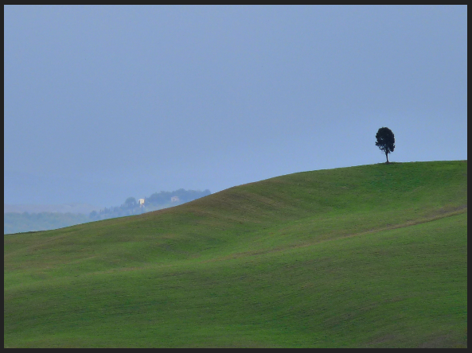

Atmósfera
Contamos con determinados efectos atmosféricos como complemento a los efectos que se consiguen al activar la opción Cielo en la botonera Cielo y Atmósfera de una lámpara de tipo Sol  . No nos estamos refiriendo aquí a lluvia o niebla, sino a lo que en pintura se conoce como perspectiva aérea o perspectiva del color y que siempre debe relacionase con Leonardo da Vinci, que dice:
. No nos estamos refiriendo aquí a lluvia o niebla, sino a lo que en pintura se conoce como perspectiva aérea o perspectiva del color y que siempre debe relacionase con Leonardo da Vinci, que dice:
"Parecerá más azul aquella cosa tenebrosa que tenga interpuesto entre sí y el ojo un mayor volumen de aire, tal como por el color del cielo demostrar se puede".

Toscana (paisaje) // Autor: Lorena // Licencia: CC-BY-SA-2.0 (Creative Commons)
Este no es el lugar para desarrollar la teoría de la perspectiva aérea de Leonardo pero es interesante entender, como ya hizo él, que el aire interpuesto entre el observador y el objeto observado no es del todo transparente y esto hace que los objetos se muestren más gris-azulados cuanto más alejados están.
Comenzamos nuestro trabajo a partir de un modelado con un paisaje de un desierto con un cielo de fondo, cuyo resultado es este.
Le decimos a Blender que ponga en marcha la teoría leonardesca activando la opción Atmósfera de la botonera Cielo y atmósfera (por supuesto debe estar seleccionada la lámpara de tipo Sol  ).
).
La consecuencia es que todo se oscurece bastante.
Lo primero de lo que nos vamos a ocupar es de que la Energía de la lámpara compense esa pérdida de luminosidad. Subimos su valor a 10 y le cambiamos el color de FF9000 a FFDECC para contrarestar el exceso de azul.
En la escena también aparece una lámpara Semiesférica  que debe aumentar su energía si queremos que llene de luz y no quedar anulada por completo por la atmósfera. Nosotros aumentamos su Energía de 0.200 a 0.500.
que debe aumentar su energía si queremos que llene de luz y no quedar anulada por completo por la atmósfera. Nosotros aumentamos su Energía de 0.200 a 0.500.
Regresamos a la lámpara Sol  porque llega el momento de determinar el grado de influencia de la perspectiva aérea.
porque llega el momento de determinar el grado de influencia de la perspectiva aérea.
- Sol. En realidad sería más apropiado decir Cantidad de aire. Aumentamos considerablemente hasta 8.000 para que el efecto de perspectiva aérea sea muy evidente.
- Distancia. Muy importante. Mientras estaba a 0.000 no había azul del aire. Determinamos un valor en el que la zona alejada se tiña de azul mientras que la cercana quede lo más nítida posible. En nuestro caso un valor de 1.600 funciona muy bien. El resultado lo vemos en este render.
Profundidad de campo
La perspectiva del color de Leonardo sólo alcanza su esplendor si se acompaña del llamado sfumato. Se trata de una de las mayores glorias de la pintura por la cual los objetos más alejados se presentan con los contornos más difusos.
Ese efecto lleva por nombre profundidad de campo en el mundo de la fotografía y, por supuesto, de la infografía.
En nuestro ejemplo no es pictóricamente correcto que las dunas alejadas se contorneen con una silueta tan limpia y cortante. Pero para conseguir ese efecto en Blender hay que recurrir al Editor de Nodos  y no lo vamos a desarrollar aquí.
y no lo vamos a desarrollar aquí.
Analiza y estudia el archivo .blend
Usa este .blend para compararlo con tu resultado una vez que hayas realizado toda la práctica. Te servirá de referencia para autoevaluarte.